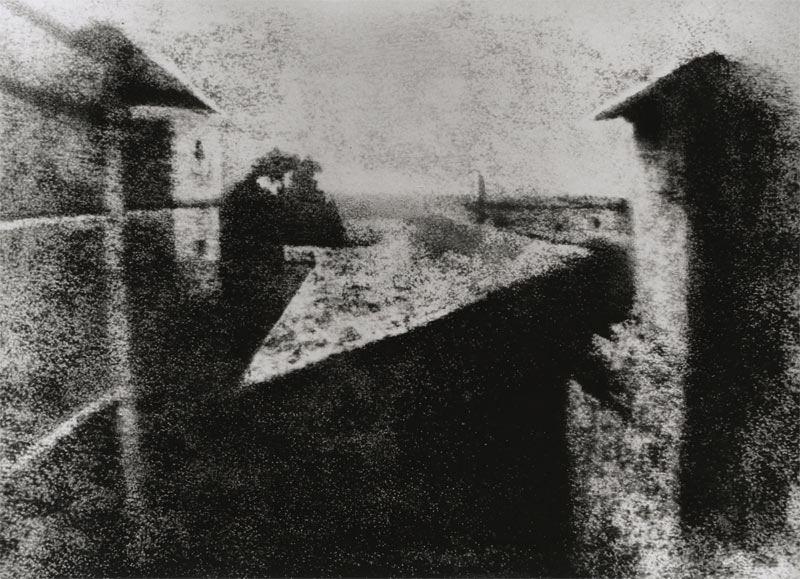

Articole
De ce iubim fotografia?
mărturisiri de Ziua Artei Fotografice

O scurtă istorie a fotografiei:
Șapte momente marcante
Ziua Artei Fotografice în România
11 ianuarie
Cuvântul fotografie are la origine două cuvinte provenite din limba greacă: φῶς phōs care se traduce ca lumină și γραφις graphis care se traduce ca a scrie. Literalmente se poate traduce prin scriere cu lumină. În vorbirea curentă se mai folosește termenul de imagine foto.
Ideea de fotografie color a circulat încă de la apariția invenției. Primele experimente fotografice în culoare nu au avut succes, astfel de exemplu nu s-a putut împiedica decolorarea fotografiilor. Prima fotografie cu culori permanente a fost făcută în 1861 de fizicianul James Clerk Maxwell.
mărturisiri de Ziua Artei Fotografice
Șapte momente marcante
11 ianuarie
Fotografia este una dintre artele care, fără îndoială, a schimbat lumea și modul în care o percepem. Chiar dacă sensul i-a fost alterat de obsesia pentru selfie-uri și fotografii cu mâncare, baza ei rămâne la fel de fascinantă.
Termenul de „fotografie” provine din limba greacă şi tradus literalmente înseamnă „a picta cu lumină”.
Aceste fenomen de pictare cu lumină a fost observat încă din secolul al III-lea î.Hr. când Aristotel a descoperit faptul că dacă se realizează o gaură într-o cutie, pe peretele opus acesteia se va forma o imagine reală, însă răsturnată.
Astfel, prima formă de aparat de fotografiat a fost, de fapt, o cameră obscură în care se putea observa imaginea răsturnată a unui obiect aflat în faţa acesteia.
În aceeaşi perioadă s-a descoperit că lumina înnegreşte clorura de argint şi că hiposulfitul de sodiu poate acţiona precum un „fixator”. Joseph Nicephore Niepce a folosit aceste trei proceduri pentru a transpune o imagine pe o placă metalică, iar calitatea era destul de ridicată.
Invenţia sa a fost preluată de Jacques Mande Daguerre, stabilindu-se astfel anul oficial al invenţiei fotografiei, 1839. În perioada următoare, s-au realizat tot mai multe descoperiri în domeniul fotografiei, creându-se astfel primele aparate de fotografiat şi primele filme realizate pe un suport de celuloid.
Fotografia a fost realizată în anul 1826 de către Nicephore Niepce. Imaginea surprinde câteva clădiri ale unor ferme din Franța.
A fost realizată în 1861 de către fotograful englez Thomas Sutton, prin punerea în practică a unei teorii sugerate de fizicianul James Clerk Maxwell în 1855. Este fotografia unei funde din stofă în carouri. Tehnica intrată în istorie sub numele Sutton-Clerk constă în folosirea a trei filtre separate de culoare (roșu, verde, albastru) și combinarea lor într-o singură imagine.

Fotografii NASA au surprins lansarea Cape Canaveral în iulie 1950. Racheta era cunoscută sub numele Bumper 2. De asemenea, se pot observa mai mulți fotografi pregătiți pentru surprinderea momentului.
Fotografia a fost făcută de Louis Daguerre. Expunerea a durat aproximativ șapte minute, iar scopul era de a surprinde trecătorii de pe bulevard. Putem observa în partea stângă inferioară un bărbat căruia îi sunt lustruiți pantofii.
Prima fotografie digitală a fost făcută în 1957, adică cu aproape 20 de ani înainte să fie inventată prima cameră digitală Kodak. Fotografia este o scanare digitală a uneia făcute inițial pe film și are o rezoluție de 176×176, cât să intre perfect în chenarul fotografiei de profil pentru Instagram.
Cu mult înainte ca selfie-urile să acapareze rețelele sociale, a existat Robert Cornelius, care a anticipat această isterie. Așadar, primul autoportret din istoria fotografiei a fost realizat în 1839.
Prima fotografie realizată în spațiu datează din anul 1946, chiar la sfârșitul celui de-al Doilea Război Mondial, cu câțiva ani înainte ca primul satelit, Sputnik, să ajungă în Cosmos.
Ziua de 11 ianuarie a fost declarată, prin Hotărârea de Guvern nr. 458/5 mai 2010, Ziua Artei Fotografice în România, 11 ianuarie fiind ziua de naștere a lui Carol Popp de Szathmary (1812-1887), recunoscut ca primul fotograf al României.
Născut la 11 ianuarie 1812, la Satu Mare, Carol Popp de Szathmary a studiat o perioadă la seminarul teologic la Blaj, dar apoi a plecat să studieze pictura la Roma. A imortalizat chipuri și scene din Războiul Crimeii (1853-1856), devenind primul artist fotograf român și primul fotoreporter de război din lume. În primăvara lui 1854, s-a deplasat pe malul Dunării, în preajma Olteniței și a Silistrei, unde se dădeau lupte, fotografiind bivuacurile, fortificațiile și combatanții.
Adevărat pionier al fotografiei, a realizat o bogată colecție de chipuri militare. La Cabinetul de stampe al Academiei Române se păstrează mai multe clișee pe sticlă și fotografii cu ofițeri superiori din toate armele și din toate taberele. Carol Popp de Szathmary semnează portretul generalului rus Mihail Dimitrievici Gorceakov, publicat în revista “The Illustrated London News” din 3 octombrie 1855.
A fost premiat în cadrul Expoziției Universale de la Paris din 1855, unde a prezentat albumul care cuprinde imagini din Războiul Crimeii. Pe lângă acest album, Szathmary a oferit câte un exemplar împăraților Napoleon al III-lea și Franz Iosif I, reginei Victoria, regelui Würtemberg-ului și marelui duce Carl Alexander de Saxa-Weimar-Eisenach.
Bun desenator, specialist în tehnica acuarelei, a fost pictorul Curții Regale din Cotroceni. A fost pictor și fotograf oficial al regelui Carol I (1866-1914).

În perioada 1860-1870, Carol Popp de Szathmary a publicat un volum cu 100 de fotografii. A fost printre primii zece fotografi din Europa. A deschis expoziții la București (1864, 1868). La Viena (1873) a expus, cu ocazia Expoziției Universale, costume naționale și peisaje românești și a obținut premiul II. A murit la 3 iunie 1887.
La 28 noiembrie 1956, a fost înființată Asociația Artiștilor Fotografi (AAF), prin Ordinul nr. 1657 emis de Ministerul Culturii. Membrii fondatori au fost Aurel Bauch, ing. T. Silistrarianu, Eugen Iarovici, Hedy Löffler-Weiselberger, Vulpaș Gh., Hananel Ion, Lovinescu Andrei, ing. Comănescu Silviu, dr. Spiru Constantinescu, Löwy Tibor, Gheorghe Șerban, Kauffman Alfred, ing. Mărculescu Herbert, ing. Tomescu Nicolae, Marinov Iulian, Spitzer Clara, Grigorescu Dan, Bacal Lidia, Tadeu Cios, Mihai Popescu, Hausleitner Frederic, ing. Bubuleac A. și Cernescu Sever.
AAF a avut sediul, inițial, în București, Piața Scânteii nr. 1, Raion Stalin. În 1960, sediul Asociației s-a mutat la parterul Palatului ”Universul” din strada Brezoianu nr. 24, în care a fost amenajată o bibliotecă și o Galerie de artă fotografică. Ulterior, sediul s-a mutat pe strada Schitu Măgureanu, unde a fost amenajat un studio de creație dotat cu aparate de fotografiat, aparate de mărit, lumini de studio, laboratoare pentru prelucrarea fotografiilor alb-negru și color și un punct de vânzare a materialelor fotosensibile (filme, hârtie și soluții).
În toată această perioadă, Asociația Artiștilor Fotografi a organizat Saloane Internaționale ale României, majoritatea fiind vernisate la Galeria Dalles din București.
AAF a editat, în colaborare cu Institutului Național de Informare și Documentare Științifică și Tehnică, buletinul Asociației, intitulat ”Fotografia” (1966-1989), apoi, în colaborare cu Institutul Central de Documentare Tehnică, a editat caietele selective ”Fotografia”, în care au fost publicate, în principal, articole de tehnică fotografică, iar din 1990, pentru o perioadă foarte scurtă, revista ”Fotografia&Video”. Aceasta a reapărut în 2001, devenind organul de presă oficial al AAF-România. În 2001, AAF era compusă din opt filiale teritoriale: Banat, Bucovina, București, Dobrogea, Moldova, Muntenia, Oltenia și Transilvania, precum și din 17 fotocluburi afiliate, membri individuali străini și din diasporă și 1.500 de membri individuali. În scurt timp, AAF a redus numărul fotocluburilor la 15 și, ulterior, și-a încetat, practic, activitatea.
În anul 2007, cinci artiști fotografi cunoscuți, președinți de fotocluburi, au demarat acțiunea de reconstituire a Asociației Artiștilor Fotografi din România (AAFR). Asociația a încheiat protocoale de parteneriat cu 46 de organizații din orașele: Arad, București, Bistrița, Brașov, Brăila, Botoșani, Cluj Napoca, Câmpina, Craiova, Galați, Gheorgheni, Gura Humorului, Odorheiu Secuiesc, Oradea, Miercurea Ciuc, Iași, Pitești, Ploiești, Râmnicu Vâlcea, Sfântu Gheorghe, Sibiu, Suceava, Târgoviște, Târgu Mureș, Timișoara, Valea lui Mihai, respectiv cu organizații din țările limitrofe României: Cernăuți (Ucraina), Chișinău (R. Moldova), Debrecen și Szolnok (Ungaria), Novi-Sad (Serbia). În prezent, sediul Asociației este în str. Dr. Turnescu nr. 6 din sectorul 5 al Capitalei. Președintele AAFR este Eugen Negrea, conform site-ului aafro.ro.
În 12 ianuarie 2011, a avut loc vernisajul primului Salon al Artiștilor Fotografi din București, organizat sub patronajul Asociației Artiștilor Fotografi din România.
Fotografia e ca pescuitul. Te duci dimineața și nu ai idee ce te așteaptă. Câteodată ai noroc și oalele pentru crabi ți se umplu cu homari. Alteori, te alegi cu nimic.
Care dintre fotografiile mele este preferata mea? Cea pe care o voi face mâine.
Cele mai bune fotografii pe care le avem se găsesc în mințile noastre. Sunt acolo, undeva, pur și simplu…și reprezintă arhiva noastră personală. Nimeni nu o poate atinge…nimeni nu o poate vedea.
Vremea nu e niciodată cooperantă cu fotografii.
Blitz-ul de la aparatul de fotografiat te va lăsa în momentul în care ai nevoie de el.
Când fotografiez, nu fac decât să caut răspunsuri lucrurilor.
Nu pot să cânt, să pictez și nu știu să scriu ce simt, așa că nu îmi rămâne decât fotografia, pentru a-mi exprima sentimentele. Fotografia este arta de a fura timpului o firimitură de clipă.
Nu faci o fotografie, o creezi!
Fotografia excepțională ține de adâncimea sentimentului, nu de cea a câmpului focalizat.
Asistenții fotografi sunt indispensabili, dacă nu ar fi ei nu ar avea cine să țipe la ei.
Fotografia e o reacție imediată care conturează meditația.
O fotografie este un secret despre un secret. Cu cât îți spune mai multe cu atât știu mai puțin.
Câteodată ai noroc și oalele pentru crabi ți se umplu cu homari. Alteori, te alegi cu nimic. La fel este și în fotografie. Când developezi filmul fotografic constați că este plin cu fotografii reușite dacă ai avut noroc și inspirație.
Nu am decis să fiu un fotograf, mi s-a întâmplat să pic în această lume.
Fotografie, un tablou pictat de soare fără educație artistică.


{kind=link}
{kind=link}
{kind=link}
{kind=link}
{kind=link}
{kind=link}
{kind=link}
{kind=link}
{kind=link}
{kind=link}
{kind=link}
{kind=link}
{kind=link}
{kind=link}
{kind=link}
{kind=link}